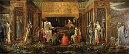

This myserious island is never given much description in the few legends of Arthur it's referenced in, which leaves a lot of room for artistic interpretation!
What we do know, thanks to the Historia Regum Britanniae, is that Avalon is allegedly the place where Arthur's Sword, Excalibur, was forged.
In some versions of the story, after Arthur almost dies in the Battle of Camlann, he is taken to Avalon by boat to heal from his wounds, where he resides to this day.
Go back